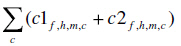
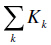
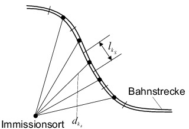
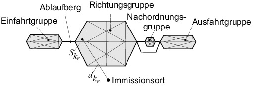
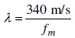
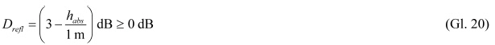
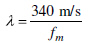

| Spalte | A | B | C |
|---|---|---|---|
| Zeile | Formelzeichen | Einheit | Bedeutung |
| 1 | ɑA | dB | A-bewerteter Gesamtpegel der längenbezogenen Schallleistung unter bestimmten Bedingungen |
| 2 | Δɑ | dB | Differenz zum Gesamtpegel ɑA im Oktavband ƒ |
| 3 | A | dB | Ausbreitungs-Dämpfungsmaß |
| 4 | Adiv | dB | Dämpfungsmaß infolge geometrischer Ausbreitung |
| 5 | Aatm | dB | Dämpfungsmaß infolge Luftabsorption |
| 6 | Agr | dB | Dämpfungsmaß infolge Bodeneinfluss |
| 7 | Abar | dB | Dämpfungsmaß infolge Abschirmung durch Hindernisse |
| 8 | b | – | Geschwindigkeitsfaktor |
| 9 | c | dB | Zähler für Pegelkorrekturen c1 und c2 |
| 10 | c1 | dB | Pegelkorrektur für Fahrbahnarten |
| 11 | c2 | dB | Pegelkorrektur für Fahrflächenzustand |
| 12 | C2 | – | Abschirmfaktor bei Einfachbeugung |
| 13 | C3 | – | Zusätzlicher Abschirmfaktor bei Mehrfachbeugung |
| 14 | d | m | Laufweglänge des Schalls zwischen Schallquelle und Immissionsort |
| 15 | dp | m | Horizontale Entfernung zwischen Schallquelle und Immissionsort |
| 16 | dr | m | Abstand letzte Beugungskante – Immissionsort |
| 17 | ds | m | Abstand Schallquelle – 1. Beugungskante |
| 18 | dso | m | Abstand Schallquelle – Reflektor |
| 19 | dor | m | Abstand Reflektor – Immissionsort |
| 20 | dП | m | Abstand Schallquelle – Immissionsort parallel zur Beugungskante |
| 21 | DI | dB | Richtwirkungsmaß |
| 22 | DIr | dB | Richtwirkungsmaß des reflektierten Schalls |
| 23 | Dreƒl | dB | Pegelkorrektur für reflektierende Schallschutzwand mit absorbierendem Sockel |
| 24 | Dz | dB | Abschirmmaß |
| 25 | Dρ | dB | Reflexionsdämpfungsmaß |
| 26 | DΩ | dB | Raumwinkelmaß |
| 27 | e, e1... | m | Abstand zwischen Beugungskanten |
| 28 | ƒ | – | Zähler für Oktavband |
| 29 | ƒm | – | Oktavbandmittenfrequenz |
| 30 | Fz | – | Zähler für Fahrzeugkategorie |
| 31 | h | – | Zähler für Höhenbereich |
| 32 | habs | m | Höhe des absorbierenden Sockels einer Schallschutzwand |
| 33 | hg | m | Höhe der Schallquelle über dem Boden |
| 34 | hLSW | m | Mittlere Höhe einer Schallschutzwand über der Schienenoberkante |
| 35 | hm | m | Mittlere Höhe über dem Boden |
| 36 | hs | m | Höhe der Schallquelle über der Schienenoberkante |
| 37 | hr | m | Höhe des Immissionsortes über dem Boden |
| 38 | i | – | Zähler für Einzelschallquelle |
| 39 | j | – | Zähler für Linienquelle |
| 40 | k | dB | Zähler für Pegelkorrekturen K |
| 41 | K | dB | Pegelkorrekturen |
| 42 | KBr | dB | Pegelkorrektur für Brücken |
| 43 | kF | – | Zähler für Teilstück einer Fläche |
| 44 | KLM | dB | Pegelkorrektur für Schallminderungsmaßnahmen an Brücken |
| 45 | KL | dB | Pegelkorrektur für die Auffälligkeit von Geräuschen |
| 46 | KLA | dB | Pegelkorrektur für Schallschutzmaßnahmen gegen die Auffälligkeit von Geräuschen |
| 47 | Kmet | – | Korrekturfaktor für meteorologische Einflüsse |
| 48 | kS | – | Zähler für Teilstück einer Linie bzw. Strecke |
| 49 | KS | dB | Pegelkorrektur zur Berücksichtigung der geringeren Störwirkung des Schienenverkehrslärms |
| 50 | l | m | Länge |
| 51 | lh | m | Horizontalabmessung eines Hindernisses auf dem Schallausbreitungsweg |
| 52 | ll | m | Senkrechter Abstand zwischen Verbindungslinie Quelle – Empfänger und 1. Endpunkt des Hindernisses auf dem Schallausbreitungsweg |
| 53 | lr | m | Senkrechter Abstand zwischen Verbindungslinie Quelle – Empfänger und 2. Endpunkt des Hindernisses auf dem Schallausbreitungsweg |
| 54 | lmin | m | Kleinste Abmessung des Reflektors |
| 55 | LEA | dB | A-bewerteter Einzelereignispegel je Oktavband ƒ |
| 56 | Lp,Aeq | dB | Äquivalenter Dauerschalldruckpegel |
| 57 | Lp,Aeq,Tag | dB | Äquivalenter Dauerschalldruckpegel für den Beurteilungszeitraum Tag (6 Uhr bis 22 Uhr) |
| 58 | Lp,Aeq,Nacht | dB | Äquivalenter Dauerschalldruckpegel für den Beurteilungszeitraum Nacht (22 Uhr bis 6 Uhr) |
| 59 | Lr | dB | Beurteilungspegel |
| 60 | LWA | dB | A-bewerteter Gesamtpegel der Schallleistung |
| 61 | ΔLW,ƒ | dB | Pegeldifferenz zum A-bewerteten Gesamtpegel der Schallleistung im Oktavband ƒ |
| 62 | LW'A | dB | A-bewerteter Gesamtpegel der längenbezogenen Schallleistung |
| 63 | LW"A | dB | A-bewerteter Gesamtpegel der flächenbezogenen Schallleistung |
| 64 | ΔLW',ƒ | dB | Pegeldifferenz zum A-bewerteten Gesamtpegel der längenbezogenen Schallleistung im Oktavband ƒ |
| 65 | LWA,im | dB | A-bewerteter Gesamtpegel der Schallleistung der Spiegelschallquelle |
| 66 | m | – | Teilquellennummer |
| 67 | nAchs | – | Anzahl der Achsen je Fahrzeugeinheit |
| 68 | nFz | – | Anzahl der Fahrzeuge je Stunde |
| 69 | ni | – | Anzahl der Ereignisse je Stunde an der Punktschallquelle |
| 70 | nj | – | Anzahl der Ereignisse je Stunde an der Linienschallquelle |
| 71 | nQ | – | Anzahl der Schallquellen je Fahrzeugeinheit |
| 72 | q | – | Anzahl der Schallquellen im Rangier- und Umschlagbahnhof |
| 73 | r | m | Radius |
| 74 | R | – | Index für Rangierbahnhof |
| 75 | S | m2 | Fläche |
| 76 | T | s | Zeitdauer |
| 77 | v | km/h | Geschwindigkeit |
| 78 | w | – | Zähler für Ausbreitungsweg |
| 79 | z | m | Umweg eines Schallstrahls durch Beugung |
| 80 | α | dB/km | Absorptionskoeffizient |
| 81 | β | Rad | Reflexionswinkel |
| 82 | Ϭ | Rad | Winkel der Schallabstrahlung |
| 83 | λ | m | Schallwellenlänge |
| 84 | ρ | – | Schallreflexionsgrad |
| Spalte | A | B |
|---|---|---|
| Zeile | Abkürzungen | Bedeutung |
| 1 | büG | besonders überwachtes Gleis |
| 2 | E-Lok | Elektrolokomotive |
| 3 | ET | Elektrotriebwagen |
| 4 | FO | Fahrbahnoberkante |
| 5 | HGV | Hochgeschwindigkeitsverkehr |
| 6 | IO | Immissionsort |
| 7 | Rbf | Rangierbahnhof |
| 8 | SO | Schienenoberkante |
| 9 | Ubf | Umschlagbahnhof |
| 10 | V-Lok | Verbrennungslokomotive (Diesellok) |
| 11 | VT | Verbrennungstriebwagen |
| ɑA,h,m,Fz | A-bewerteter Gesamtpegel der längenbezogenen Schallleistung bei der Bezugsgeschwindigkeit v0 = 100 km/h auf Schwellengleis mit durchschnittlichem Fahrflächenzustand, nach Beiblatt 1 und 2, in dB, |
| Δɑƒ,h,m,Fz | Pegeldifferenz im Oktavband ƒ, nach Beiblatt 1 und 2, in dB, |
| nQ | Anzahl der Schallquellen der Fahrzeugeinheit nach Nummer 4.1 bzw. 5.1, |
| nQ,0 | Bezugsanzahl der Schallquellen der Fahrzeugeinheit nach Nummer 4.1 bzw. 5.1, |
| bƒ,h,m | Geschwindigkeitsfaktor nach Tabelle 6 bzw. 14, |
| vFz | Geschwindigkeit nach Nummer 4.3 bzw. 5.3.2, in km/h, |
| v0 | Bezugsgeschwindigkeit, v0 = 100 km/h, |
|  | Summe der c Pegelkorrekturen für Fahrbahnart (c1) nach Tabelle 7 bzw. 15 und Fahrfläche (c2) nach Tabelle 8, in dB, |
|  | Summe der k Pegelkorrekturen für Brücken nach Tabelle 9 bzw. 16 und die Auffälligkeit von Geräuschen nach Tabelle 11, in dB. |
| LWA,h,i , LW'A,h,j | A-bewerteter Gesamtpegel der Schallleistung bzw. der längenbezogenen Schallleistung der Einzelquelle i bzw. j nach Beiblatt 3, in dB, |
| ΔLW,ƒ,h,i, ΔLW',ƒ,h,j | Pegeldifferenz im Oktavband ƒ nach Beiblatt 3, in dB, |
| ni,nj | Anzahl der Ereignisse bzw. Einheiten pro Stunde, |
| Kk | Pegelkorrektur für die Auffälligkeit der Geräusche nach Tabelle 9 und Tabelle 11, in dB. |
| SF | Teilfläche mit gleichmäßiger Schallemission, in m2, |
| S0 = 1 m2 | Bezugsfläche, |
| lj | Länge der Linienquelle j, in m, |
| l0 = 1 m | Bezugslänge, |
| qi,h | Anzahl der Punktschallquellen der Art i im Höhenbereich h, |
| qj,h | Anzahl der Linienschallquellen der Art j im Höhenbereich h. |
|  |  |
| Spalte | A | B | C |
|---|---|---|---|
| Zeile | Fahrzeugart | Fahrzeug-Kategorie Fz | Bezugsanzahl der Achsen nAchs,0 |
| 1 | HGV-Triebkopf | 1 | 4 |
| 2 | HGV-Mittel-/Steuerwagen, nicht angetrieben | 2 | 4 |
| 3 | HGV-Triebzug | 3 | 32 |
| 4 | HGV-Neigezug | 4 | 28 |
| 5 | E-Triebzug und S-Bahn (ET) | 5 | 10 |
| 6 | V-Triebzug (VT) | 6 | 6 |
| 7 | Elektrolok (E-Lok) | 7 | 4 |
| 8 | Diesellok (V-Lok) | 8 | 4 |
| 9 | Reisezugwagen | 9 | 4 |
| 10 | Güterwagen | 10 | 4 |
| Spalte | A | B | C | D | E | F | G | H | I | J | K | L |
|---|---|---|---|---|---|---|---|---|---|---|---|---|
| Zeile | Zugart | Höchstgeschwindigkeit im Regelverkehr in km/h | Anzahl der Fahrzeugeinheiten je Fz-Kategorie | |||||||||
| 1 | 2 | 3 | 4 | 5 | 6 | 7 | 8 | 9 | 10 | |||
| 1 | ICE-1-Zug | 250 | 2 | 12 | ||||||||
| 2 | ICE-2-Halbzug | 250 | 1 | 7 | ||||||||
| 3 | ICE-2-Vollzug | 250 | 2 | 14 | ||||||||
| 4 | ICE-3-Halbzug | 300 | 1 | |||||||||
| 5 | ICE-3-Vollzug | 300 | 2 | |||||||||
| 6 | ICE-T | 230 | 1 | |||||||||
| 7 | Thalys-PBKA-Halbzug | 300 | 2 | 5 | ||||||||
| 8 | Thalys-PBKA-Vollzug | 300 | 4 | 10 | ||||||||
| 9 | ETR 470 Cisalpino | 200 | 1 | |||||||||
| 10 | IC-Zug (bespannt mit E-Lok) | 200 | 1 | 12 | ||||||||
| 11 | IC-Zug (bespannt mit V-Lok) | 160 | 1 | 12 | ||||||||
| 12 | Nahverkehrszug (bespannt mit E-Lok) | 160 | 1 | 5 | ||||||||
| 13 | Nahverkehrszug (bespannt mit V-Lok) | 140 | 1 | 5 | ||||||||
| 14 | Nahverkehrszug (ET) | 140 | 1 | |||||||||
| 15 | Nahverkehrszug (VT) | 120 | 1 | |||||||||
| 16 | IC3 | 180 | 1 | |||||||||
| 17 | S-Bahn | 120 | 1 | |||||||||
| 18 | Güterzug (bespannt mit E-Lok) | 100 | 1 | 24 | ||||||||
| 19 | Güterzug (bespannt mit V-Lok) | 100 | 1 | 24 | ||||||||
| Spalte | A | B | C | D | E |
|---|---|---|---|---|---|
| Zeile | Schallquellenart | Höhenbereich h | Höhe hs über SO | Teilquellen m | Geräuschursache, Komponente |
| 1 | Rollgeräusche | 1 | 0 m | 1 | Schienenrauheit |
| 2 | 1 | 0 m | 2 | Radrauheit | |
| 3 | 2 | 4 m | 3 | Abstrahlung des als Körperschall übertragenen Rollgeräusches aufgrund der Schienenrauheit durch Kesselwagenaufbauten | |
| 4 | 2 | 4 m | 4 | Abstrahlung des als Körperschall übertragenen Rollgeräusches aufgrund der Radrauheit durch Kesselwagenaufbauten | |
| 5 | Aerodynamische Geräusche | 3 | 5 m | 5 | Stromabnehmerwippe |
| 6 | 2 | 4 m | 6 | Stromabnehmerfuß, Gitter von Kühl- und Klimaanlagen im Dachbereich | |
| 7 | 1 | 0 m | 7 | Umströmung der Drehgestelle | |
| 8 | Aggregatgeräusche | 2 | 4 m | 8 | Ventilatoren von Kühl- und Klimaanlagen, Saugseite im Dachbereich |
| 9 | 1 | 0 m | 9 | Ventilatoren von Kühl- und Klimaanlagen, Saug- und Druckseite im Unterflurbereich | |
| 10 | Antriebsgeräusche | 2 | 4 m | 10 | Abgasanlage |
| 11 | 1 | 0 m | 11 | Motor, Getriebe |
| Spalte | A | B | C | |||||||
|---|---|---|---|---|---|---|---|---|---|---|
| Zeile | Schallquellenart | Teil- quellen m | Geschwindigkeitsfaktor b in der Oktavband-Mittenfrequenz, in Hz | |||||||
| 1 | 63 | 125 | 250 | 500 | 1 000 | 2 000 | 4 000 | 8 000 | ||
| 2 | Rollgeräusche | 1, 2, 3, 4 | –5 | –5 | –5 | 0 | 10 | 25 | 25 | 25 |
| 3 | Aerodynamische Geräusche | 5, 6, 7 | 50 | |||||||
| 4 | Aggregatgeräusche | 8, 9 | –10 | |||||||
| 5 | Antriebsgeräusche | 10, 11 | 20 | |||||||
| Spalte | A | B | C | |||||||
|---|---|---|---|---|---|---|---|---|---|---|
| Zeile | Einflussgröße | Pegelkorrekturen c1 in dB für Oktavband-Mittenfrequenz, in Hz | ||||||||
| 63 | 125 | 250 | 500 | 1 000 | 2 000 | 4 000 | 8 000 | |||
| 1 | Feste Fahrbahn | Erhöhte Schienenabstrahlung | 0 | 0 | 0 | 7 | 3 | 0 | 0 | 0 |
| 2 | Reflexion an der Fahrbahn | 1 | 1 | 1 | 1 | 1 | 1 | 1 | 1 | |
| 3 | Feste Fahrbahn mit Absorber | Erhöhte Schienenabstrahlung | 0 | 0 | 0 | 7 | 3 | 0 | 0 | 0 |
| 4 | Reflexion an der Fahrbahn | 0 | 0 | 0 | –2 | –2 | –3 | 0 | 0 | |
| 5 | Bahnübergang | Erhöhte Schienenrauheit | 0 | 0 | 0 | 8 | 4 | 0 | 0 | 0 |
| 6 | Reflexion an der Fahrbahn | 1 | 1 | 1 | 1 | 1 | 1 | 1 | 1 | |
| Spalte | A | B | C | |||||||
|---|---|---|---|---|---|---|---|---|---|---|
| Zeile | Maßnahme | Teilquelle m | Pegelkorrekturen c2 in dB in der Oktavband-Mittenfrequenz, in Hz | |||||||
| 63 | 125 | 250 | 500 | 1 000 | 2 000 | 4 000 | 8 000 | |||
| 1 | besonders überwachtes Gleis (büG) | 1, 3 | 0 | 0 | 0 | –4 | –5 | –5 | –4 | 0 |
| 2 | Schienenstegdämpfer | 1, 3 | 0 | 0 | 0 | –2 | –3 | –3 | 0 | 0 |
| 3 | 2, 4 | 0 | 0 | 0 | –1 | –3 | –2 | 0 | 0 | |
| 4 | Schienenstegabschirmung | 1 | 0 | 0 | 0 | –3 | –4 | –5 | 0 | 0 |
| Spalte | A | B | C |
|---|---|---|---|
| Zeile | Brücken- und Fahrbahnart | KBr in dB | KLM in dB |
| 1 | Brücken mit stählernem Überbau, Gleise direkt aufgelagert | 12 | –6 |
| 2 | Brücken mit stählernem Überbau und Schwellengleis im Schotterbett | 6 | –3 |
| 3 | Brücken mit massiver Fahrbahnplatte oder mit besonderem stählernen Überbau und Schwellengleis im Schotterbett | 3 | –3 |
| 4 | Brücken mit fester Fahrbahn | 4 | – |
| Spalte | A | B | C | D | E |
|---|---|---|---|---|---|
| Zeile | Anlagenteil | Schallquellenart | Höhenbereich h | Höhe hs über SO/FO | Geräuschursache |
| 1 | Rangier- und Umschlagbahnhöfe | ||||
| 2 | Einfahr-, Richtungs-, Nachordnungs- und Ausfahrgruppe in Rangier- und Umschlagbahnhöfen sowie in Autoreisezuganlagen | Rollgeräusche von Lok und Güterwagen, Aggregate und Antriebsgeräusch der Lok | 1 | 0 m | Rauheit der Schienen und Radlaufflächen, Ventilatoren, Motor, Getriebe |
| 3 | Antriebsgeräusche der Rangierlok | 2 | 4 m | Abgasanlage | |
| 4 | Kurvenfahrgeräusch | 1 | 0 m | Stick-slip, Anlaufen der Radspurkränze am Schienenkopf | |
| 5 | Einfahrgruppe | Abdrückgeräusch von Güterwagen über den Ablaufberg | 2 | 4 m | Aggregate und Antrieb der abdrückenden Lok |
| 6 | Richtungs- und Nachordnungsgruppe | Gleisbremsengeräusch | 1 | 0 m | Reibung der Radflanken an Bremsbalken |
| 7 | Retardergeräusch (Klingelgeräusch) | 1 | 0 m | Eindrücken von Stoßdämpfern | |
| 8 | Hemmschuhauflaufgeräusch | 1 | 0 m | Reibung des Radsatzes auf Metall | |
| 9 | Auflaufstoßgeräusch | 6 | 1,5 m | Pufferstoß | |
| 10 | Richtungs- und Ausfahrgruppe | Geräusch beim Anreißen und Abbremsen von lose gekuppelten Wagen | 6 | 1,5 m | ruckartiges Beschleunigen und Abbremsen von lose gekuppelten Güterwagen |
| Spalte | A | B | C | D | E |
|---|---|---|---|---|---|
| Zeile | Schallquellenart | Geräuschquelle | KL dB | KLA dB | Bemerkung |
| 1 | Kurvenfahrgeräusch bei Eisenbahnstrecken | Kurvenradius < 300 m | 8 | –3 | |
| 2 | Kurvenradius von 300 m bis < 500 m | 3 | –3 | ||
| 3 | Kurvenradius ≥ 500 m | 0 | |||
| 4 | Kurvenfahrgeräusch in Rangier- und Umschlagbahnhöfen | alle Radien ≤ 300 m | 6 | –3 | |
| 5 | Gleisbremsengeräusch | Zulaufbremse | 6 | –3 | |
| 6 | Talbremse TW ohne oder mit Segmenten, Richtungsgleisbremse TWE einseitig mit Segmenten, Talbremse FEW Leipzig | 6 | –3 | ||
| 7 | Talbremse TW beidseitig mit GG-Segmenten, TW schalloptimiert | 3 | |||
| 8 | Schraubenbremse | 3 | |||
| 9 | Retarder | 3 | gilt auch für Rangierfahrten über Retarderstrecken | ||
| 10 | Sonstige Geräusche | Hemmschuhaufläufe | 6 | Geräusche treten nur in Rangierbahnhöfen ohne moderne Rangiertechnik auf | |
| 11 | Auflaufstöße | 3 | in Rangierbahnhöfen mit moderner Technik | ||
| 12 | 6 | in Rangierbahnhöfen mit älterer Technik | |||
| 13 | Anreißen und Abbremsen von lose gekuppelten Güterwagen | 6 | Geräusche vermeidbar durch festes Kuppeln der Wagen untereinander |
| Spalte | A | B | C |
|---|---|---|---|
| Zeile | Fahrzeugart | Fahrzeug-Kategorie Fz | Bezugsanzahl der Achsen nAchs,0 |
| 1 | Straßenbahn-Niederflurfahrzeuge | 21 | 8 |
| 2 | Straßenbahn-Hochflurfahrzeuge | 22 | |
| 3 | U-Bahn-Fahrzeuge | 23 |
| Spalte | A | B | C | D | E | F |
|---|---|---|---|---|---|---|
| Zeile | Schallquellenart | Höhenbereich h | Höhe über SO hS | Teilquelle m | Geräuschursache, Komponente | Fahrzeug-Kategorie Fz |
| 1 | Fahrgeräusche | 1 | 0 m | 1 | Schienenrauheit | 21, 22, 23 |
| 2 | 1 | 0 m | 2 | Radrauheit, Motor, Getriebe | ||
| 3 | Aggregatgeräusche | 1 | 0 m | 3 | Stromrichter, Kompressor, Klima- bzw. Lüftungsaggregate | 22, 23 |
| 4 | 2 | 4 m | 4 | Stromrichter, Kompressor, Klima- bzw. Lüftungsaggregate | 21 |
| Spalte | A | B | C | |||||||
|---|---|---|---|---|---|---|---|---|---|---|
| Zeile | Schallquellenart | Teilquelle m | Geschwindigkeitsfaktor b für Oktavband-Mittenfrequenz, in Hz | |||||||
| 63 | 125 | 250 | 500 | 1 000 | 2 000 | 4 000 | 8 000 | |||
| 1 | Fahrgeräusch von Niederflur- und Hochflurfahrzeugen | 1, 2 | 0 | 0 | –5 | 5 | 20 | 15 | 15 | 20 |
| 2 | Fahrgeräusch von U-Bahn-Fahrzeugen | 1,2 | 15 | 10 | 20 | 20 | 30 | 25 | 25 | 20 |
| 3 | Aggregatgeräusche | 3, 4 | –10 | |||||||
| Spalte | A | B | C | |||||||
|---|---|---|---|---|---|---|---|---|---|---|
| Zeile | Fahrbahnart | Anwendung Teilquelle m | Pegelkorrekturen c1 in dB für Oktavband-Mittenfrequenz, in Hz | |||||||
| 63 | 125 | 250 | 500 | 1 000 | 2 000 | 4 000 | 8 000 | |||
| 1 | Straßenbündiger Bahnkörper und feste Fahrbahn | 1, 2 | 2 | 3 | 2 | 5 | 8 | 4 | 2 | 1 |
| 2 | Begrünter Bahnkörper – Gleiseindeckung mit tief liegender Vegetationsebene | 1, 2 | –2 | –4 | –3 | –1 | –1 | –1 | –1 | –3 |
| 3 | Begrünter Bahnkörper – Gleiseindeckung mit hoch liegender Vegetationsebene | 1, 2 | 1 | –1 | –3 | –4 | –4 | –7 | –7 | –5 |
| Spalte | A | B | C |
|---|---|---|---|
| Zeile | Brücken- und Fahrbahnart | KBr dB | KLM dB |
| 1 | Brücken mit stählernem Überbau, Gleise direkt aufgelagert | 12 | –6 |
| 2 | Brücken mit stählernem Überbau und Schwellengleis im Schotterbett | 6 | –3 |
| 3 | Brücken mit stählernem Überbau oder massiver Fahrbahnplatte, Gleise in Straßenfahrbahn eingebettet (Rillenschiene) | 4 | – |
| 4 | Brücken mit massiver Fahrbahnplatte oder mit besonderem stählernen Überbau, Gleise auf Schwellengleis im Schotterbett | 3 | –3 |
| 5 | Brücken mit massiver Fahrbahnplatte, Gleise direkt aufgelagert (feste Fahrbahn) | 4 | – |
| Adiv | A durch geometrische Ausbreitung nach Nummer 6.2, |
| Aatm | A durch Luftabsorption nach Nummer 6.3, |
| Agr | A durch Bodeneinfluss nach Nummer 6.4, |
| Abar | A durch Abschirmung durch Hindernisse nach Nummer 6.5. |
| d | Laufweglänge zwischen Punktschallquelle und Immissionsort, in m, |
| d0 = 1 m | Bezugslänge. |
| α | Absorptionskoeffizient der Luft, in dB je 1 000 m für jedes Oktavband bei der Bandmittenfrequenz. |
| Spalte | A | B | |||||||
|---|---|---|---|---|---|---|---|---|---|
| Zeile | Bezeichnung | Oktavband-Mittenfrequenz ƒ, in Hz | |||||||
| 1 | 63 | 125 | 250 | 500 | 1 000 | 2 000 | 4 000 | 8 000 | |
| 2 | Absorptionskoeffizient α in dB je 1 000 m | 0,1 | 0,4 | 1,0 | 1,9 | 3,7 | 9,7 | 32,8 | 117 |
| Agr,B | Dämpfungsmaß durch Bodenabsorption über Boden nach (Gl. 14), |
| Agr,W | Dämpfungsmaß durch Reflexion über Wasser nach (Gl. 16), |
| d | Abstand zwischen Schallquellenmitte und Immissionsort, in m, |
| S | Fläche zwischen Laufweg und Boden, in m². |
| dW | Abschnitt der horizontalen Entfernung zwischen Schallquellenmitte und Immissionsort über Wasserflächen, in m. |
|  | Schallwellenlänge bei der Oktavband-Mittenfrequenz ƒm, in m, |
| ll | senkrechter Abstand zwischen Verbindungslinie Quelle – Empfänger und 1. Endpunkt des Hindernisses, in m, |
| lr | senkrechter Abstand zwischen Verbindungslinie Quelle – Empfänger und 2. Endpunkt des Hindernisses, in m. |
| Dz | Abschirmmaß nach Gleichung (Gl. 21), in dB. |
|  | |
Pegelkorrektur für reflektierende Schallschutzwände im Abstand ds≤ 5 m mit absorbierendem Sockel der Höhe habs über der Schienenoberkante, in dB, | |
| Agr | Bodeneinfluss nach der Gleichung (Gl. 13), in dB. |
| C2 = 40 | Abschirmfaktor für Bahnstrecken mit Schallquellenarten nach den Tabellen 5 und 13, |
| C2 = 20 | Abschirmfaktor für flächenhafte Bahnanlagen mit Schallquellenarten nach Tabelle 10, |
| C3 = 1 | Abschirmfaktor für Einfachbeugung, |
| Schirmwert als Differenz zwischen den Laufweglängen des gebeugten und des direkten Schalls. Wenn eine Sichtverbindung zwischen Schallquelle und Immissionsort besteht, wird z mit negativem Vorzeichen versehen. | |
| ds | Abstand von der Punktschallquelle zur (ersten) Beugungskante, in m, |
| dr | Abstand von der (letzten) Beugungskante zum Immissionsort, in m, |
| e | Laufweglänge zwischen erster und letzter Schirmkante, in m, |
| dП | Abstand zwischen Punktschallquelle und Immissionsort, gemessen parallel zur Beugungskante (siehe Bild 5), in m, |
| d | Laufweglänge zwischen Quelle und Immissionsort, in m. |
| lmin | kleinste Abmessung des Reflektors, in m, |
| β | Winkel zwischen der Verbindungslinie Quelle zu Immissionsort und der Reflektornormalen, |
|  | Schallwellenlänge bei der Oktavband-Mittenfrequenz ƒm, in m, |
| dso | Laufweg des Schalls von der Punktschallquelle Q zum Reflektor R, in m, |
| dor | Laufweg des Schalls vom Reflektor R zum Immissionsort IO, in m. |
| LWA | A-bewerteter Schallleistungspegel nach den Gleichungen (Gl. 7) und (Gl. 8), in dB, |
| Dρ | Absorptionsverlust für Reflexionen an der Wandoberfläche nach Tabelle 18, in dB, |
| DIr | Richtwirkungsmaß der Punktschallquelle in der Richtung des Spiegelschallempfängers (siehe Gleichung (Gl. 8)), in dB. |
| Spalte | A | B |
|---|---|---|
| Zeile | Wandoberfläche | Absorptionsverlust Dρ in dB |
| 1 | Ebene und harte Wände | 0 |
| 2 | Gebäudewände mit Fenstern und kleinen Anbauten | 1 |
| 3 | Absorbierende Schallschutzwände | 4 |
| 4 | Hoch absorbierende Schallschutzwände | 8 |
| ƒ | Zähler für Oktavband, |
| h | Zähler für Höhenbereich, |
| kS | Zähler für Teilstück oder einen Abschnitt davon, |
| w | Zähler für unterschiedliche Ausbreitungswege, |
| LWA,f,h,kS | A-bewerteter Schallleistungspegel der Punktschallquelle in der Mitte des Teilstücks kS, der die Emission aus dem Höhenbereich h angibt nach der Gleichung (Gl. 6), in dB, |
| DI,kS,w | Richtwirkungsmaß für den Ausbreitungsweg w nach der Gleichung (Gl. 8), in dB, |
| DΩkS | Raumwinkelmaß nach der Gleichung (Gl. 9), in dB, |
| Af,h,kS,w | Ausbreitungsdämpfungsmaß im Oktavband ƒ im Höhenbereich h vom Teilstück kS längs des Weges w nach der Gleichung (Gl. 10), in dB. |
| R | Index für Rangierbahnhof, |
| ƒ | Zähler für Oktavband, |
| h | Zähler für Höhenbereich, |
| i | Zähler für Punktschallquellen, |
| kS | Zähler für Teilstück, |
| kF | Zähler für Teilfläche, |
| w | Zähler für Ausbreitungsweg, |
| LWA,ƒ,h,i | A-bewerteter Schallleistungspegel der Punktschallquelle i nach der Gleichung (Gl. 3), in dB, |
| LWA,f,h,kS | A-bewerteter Schallleistungspegel des Teilstücks kS nach der Gleichung (Gl. 6), in dB, |
| LWA,f,h,kF | A-bewerteter Schallleistungspegel der Teilfläche kF nach der Gleichung (Gl. 7), in dB, |
| DΩ | Raumwinkelmaß nach der Gleichung (Gl. 9), in dB, |
| Aƒ,w | Ausbreitungsdämpfungsmaß im Oktavband ƒ längs des Weges w nach der Gleichung (Gl. 10), in dB. |
| T | Zähler für volle Stunden des Beurteilungszeitraums Tag (6 Uhr bis 22 Uhr), |
| N | Zähler für volle Stunden des Beurteilungszeitraums Nacht (22 Uhr bis 6 Uhr). |
| Lr,Tag | Beurteilungspegel für den Beurteilungszeitraum Tag (6 Uhr bis 22 Uhr), in dB, |
| Lr,Nacht | Beurteilungspegel für den Beurteilungszeitraum Nacht (22 Uhr bis 6 Uhr), in dB, |
| Lp,Aeq,Tag, Lp,Aeq,Nacht | äquivalenter Dauerschalldruckpegel von Strecken, in dB, |
| KS = –5 dB | Pegelkorrektur Straße – Schiene nach Nummer 2.2.18. |
| Lr,Tag | Beurteilungspegel für den Beurteilungszeitraum Tag (6 Uhr bis 22 Uhr), in dB, |
| Lr,Nacht | Beurteilungspegel für den Beurteilungszeitraum Nacht (22 Uhr bis 6 Uhr), in dB, |
| Lp,Aeq,Tag,R, Lp,Aeq,Nacht,R | äquivalenter Dauerschalldruckpegel aus dem Bereich des Rangier- oder Umschlagbahnhofs, in dB, |
| Lp,Aeq,Tag, Lp,Aeq,Nacht | äquivalenter Dauerschalldruckpegel aus dem Bereich durchgehender Streckengleise, in dB, |
| KS = –5 dB | Pegelkorrektur Straße – Schiene im Sinne von Nummer 2.2.18 (gilt nicht für ein- und ausfahrende Züge und Rangierfahrten). |
| Lr,Tag | Beurteilungspegel für den Beurteilungszeitraum Tag (6 Uhr bis 22 Uhr), in dB, |
| Lr,Nacht | Beurteilungspegel für den Beurteilungszeitraum Nacht (22 Uhr bis 6 Uhr), in dB, |
| Lp,Aeq,Tag, Lp,Aeq,Nacht | äquivalenter Dauerschalldruckpegel von Strecken, in dB, |
| KS = –5 dB | Pegelkorrektur zur Berücksichtigung der geringeren Störwirkung des Schienenverkehrslärms gegenüber dem Straßenverkehr nach Nummer 2.2.18. |
| ɑA,2,Fz | A-bewerteter Summenschallpegel der längenbezogenen Schallleistung bei der Bezugsgeschwindigkeit v0 = 100 km/h auf Schwellengleis für das Rollgeräusch aufgrund der Radrauheit (Teilquelle m = 2), in dB, |
| Δaƒ,2,Fz | Pegeldifferenz der längenbezogenen Schallleistung bei der Bezugsgeschwindigkeit v0 = 100 km/h auf Schwellengleis für das Rollgeräusch aufgrund der Radrauheit (Teilquelle m = 2), im Oktavband ƒ, in dB, |
| LEA,ƒ | A-bewerteter Einzelereignispegel je Oktavband, in dB, |
| bƒ,2 | Geschwindigkeitsfaktor für Rollgeräusche (Teilquelle m = 2) nach Tabelle 6, |
| v | Geschwindigkeit während der Vorbeifahrt, in km/h, |
| v0 = 100 km/h | Bezugsgeschwindigkeit, |
| LWA,ƒ,h,m´,Fz | A-bewerteter Oktav-Schallleistungspegel anderer Teilquellen, in dB, |
| bƒ,m´ | Geschwindigkeitsfaktor für andere Teilquellen nach Tabelle 6, |
| m´ | Zähler für Teilquellen ohne m = 2. |
| Spalte | A | B | C |
|---|---|---|---|
| Zeile | Fahrflächenzustand der Schienen | Energetischer Beitrag zur Gesamt- emission | Pegeldifferenz zur Radrauheit (Teilquelle m = 2) |
| 1 | Sehr glatt | 0 % | –20 dB |
| 2 | Glatt, Grenzwert nach TSI bzw. VDV 154 | 20 % | –7 dB |
| 3 | Glatt, Grenzwert nach DIN EN ISO 3095:2014-7 | 40 % | –4 dB |
| Spalte | A | B | C | D |
|---|---|---|---|---|
| Zeile | 1 Messort, Mittelwert über verschiedene Fz, in dB | 3 Messorte, Mittelwert über verschiedene Fz, in dB | 1 Messort (z. B. TSI, VDV 154), Mittelwert über gleiche Fz, in dB | |
| 1 | Fahrzeuge mit Scheibenbremsen | 2 | 0 | 3 |
| 2 | Fahrzeuge mit Verbundstoff-Klotzbremsen | 2 | 1 | 4 |
| 3 | Fahrzeuge mit Grauguss-Klotzbremsen | 3 | 2 | 5 |